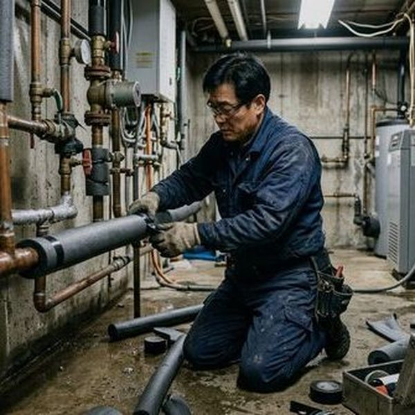
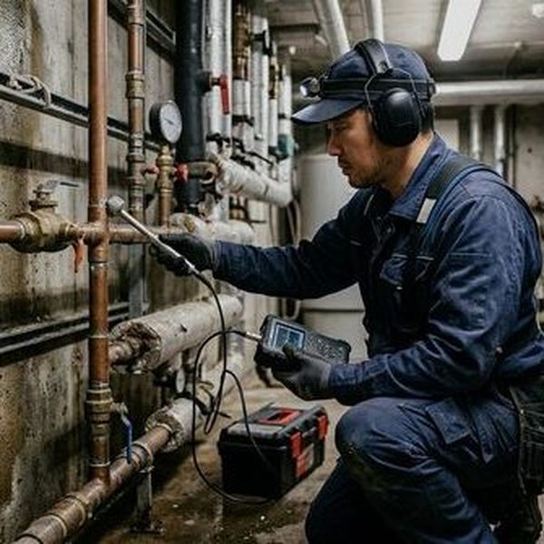
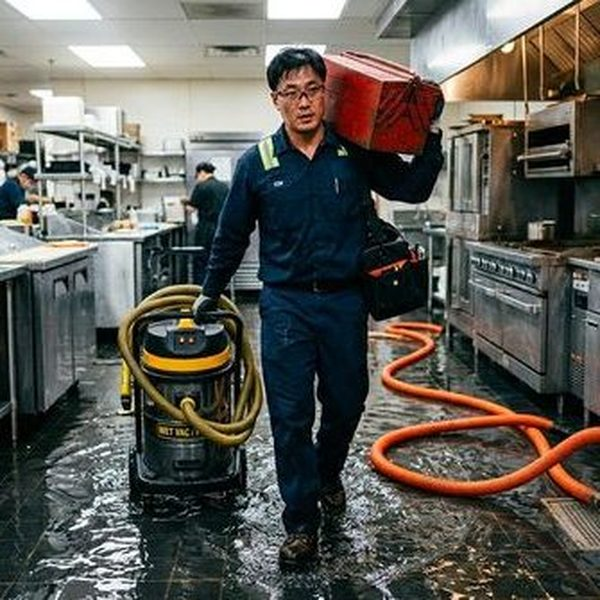

은평구 응암동, 역촌동, 불광동 지역의 가정과 음식점에서 싱크대 막힘 문제가 자주 발생합니다. 기름때가 배관 내벽에 굳어붙고 음식물 찌꺼기가 쌓이면서 점점 물 빠짐이 느려지다 완전히 막히게 됩니다.
고압세척기로 배관 내부의 기름때를 완벽하게 제거하고, 드레인 기계로 고착된 이물질을 물리적으로 파쇄합니다.

▲ 은평구 현장에서 전문 장비로 싱크대막힘 해결 작업 중
✅ 드레인 기계 - 스프링 와이어로 배관 내 이물질을 물리적으로 파쇄·제거
✅ 관로 내시경 카메라 - 배관 내부를 실시간 영상으로 확인하여 정확한 진단
✅ 고압세척기 - 최대 200bar 고압수로 배관 내벽 오염물 완벽 세척
✅ 관로탐지기 - 매설 배관의 위치와 깊이를 정확히 탐지

▲ 고압세척기를 이용한 배관 내부 청소 작업
은평구 전 지역에 28분 내 출동합니다. 야간·주말·공휴일 추가 요금 없이 동일한 서비스를 제공합니다.
📞 전화 한 통이면 정확한 견적을 바로 안내해드립니다
현장 상황에 따라 비용이 달라지기 때문에,
전화 상담 시 증상만 말씀해주시면 예상 비용을 바로 안내드립니다.
✅ 출장비 무료 | ✅ 미해결시 비용 0원 | ✅ 추가 요금 없음

▲ 은평구 싱크대막힘 전문 장비 투입 작업 현장
20년 이상 현장 경험으로 어떤 복잡한 상황에서도 해결합니다. 은평구 지역에서 싱크대막힘 문제가 발생하면 전화 한 통으로 전문가가 출동합니다.
싱크대 배수관은 U자형 트랩 구조로 되어 있어 기름기와 음식물이 특히 잘 쌓입니다. 뜨거운 물로 기름을 녹이는 것은 일시적일 뿐, 하류에서 다시 응고되어 문제가 반복됩니다.
주방 싱크대의 경우 배수관 굵기가 보통 50mm로, 욕실 배수관(75~100mm)보다 좁아 막힘에 더 취약합니다. 음식물 분쇄기(디스포저) 사용 가구에서는 분쇄된 미세 입자가 배관에 축적되는 경우도 많습니다.
Step 1. 전화 상담
싱크대 배수 상태와 증상을 청취, 가능한 원인을 미리 파악합니다.
Step 2. 현장 출동
28분 내 전문 기술자가 드레인 기계, 고압세척기를 가지고 방문합니다.
Step 3. 트랩 및 배관 점검
싱크대 트랩을 분해하여 1차 점검하고, 필요시 내시경으로 배관 깊숙한 곳까지 확인합니다.
Step 4. 기름때 및 이물질 제거
드레인 기계로 막힌 부분을 관통하고, 고압세척으로 기름때를 완전히 제거합니다.
Step 5. 정상 배수 확인
충분한 양의 물을 흘려보내 배수 속도가 완전히 정상인지 확인합니다.
Step 6. 예방 가이드 안내
재발 방지를 위한 올바른 싱크대 사용법과 정기 청소 주기를 안내합니다.
건물 유형: 15년 된 빌라 | 지역: 은평구
물이 빠지는 데 10분 이상 소요. 트랩 분해 확인 결과, U자 배관에 기름과 음식물이 90% 이상 막고 있었음. 드레인 기계로 관통 후 고압세척, 작업 시간 30분.
건물 유형: 신축 아파트 입주 1년 | 지역: 은평구
양쪽 싱크대 배수가 동시에 느려짐. 합류 지점에서 음식물 분쇄기 잔여물이 축적되어 막힘 발생. 분쇄기 연결부 분리 후 청소 및 배관 세척. 작업 시간 40분.
A. 네, 배수 속도가 느려진 것은 배관 내부에 기름때와 음식물 찌꺼기가 축적되고 있다는 초기 신호입니다. 방치하면 완전히 막힐 수 있으므로 조기에 전문가 점검을 받는 것이 좋습니다.
A. 일반적인 기름때 막힘은 30분~1시간 내 해결됩니다. 배관 깊숙한 곳의 심한 막힘이나 배관 노후로 인한 경우 추가 시간이 필요할 수 있으며, 현장에서 정확한 소요 시간을 안내합니다.
A. 식용유, 기름기가 배관 내벽에 응고되어 점차 쌓이고, 여기에 음식물 찌꺼기가 걸려 막힘이 발생합니다. 특히 겨울철에는 찬물로 기름이 더 빨리 응고되어 빈도가 높아집니다.